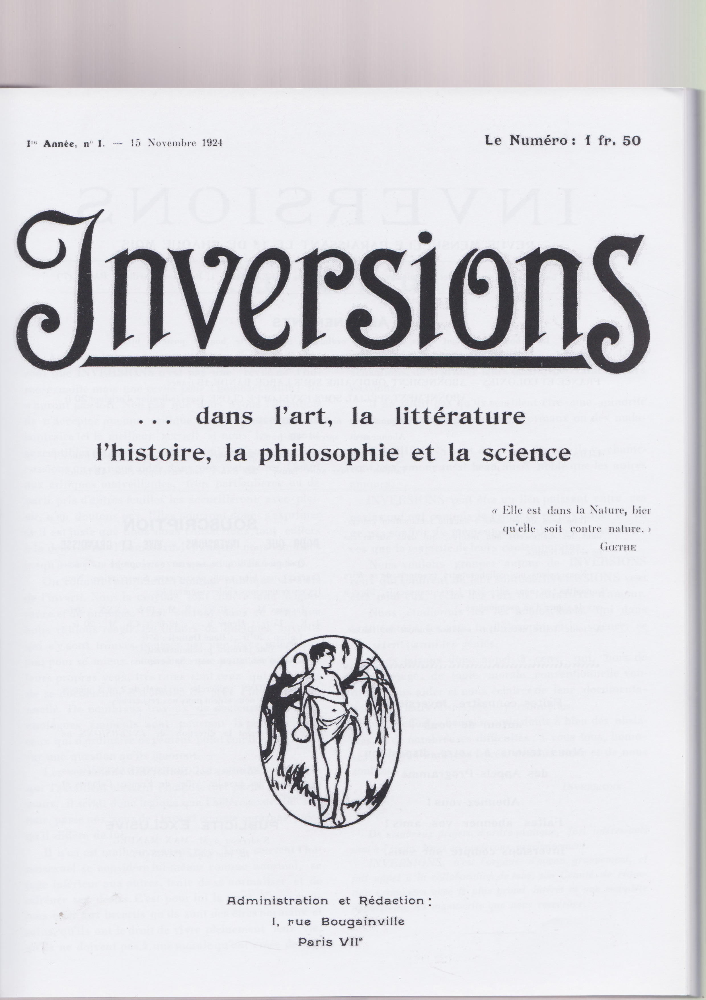
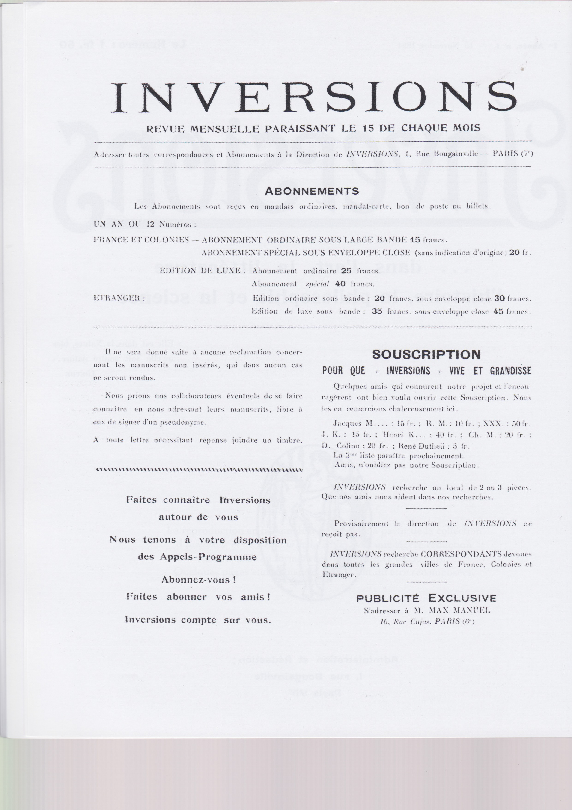
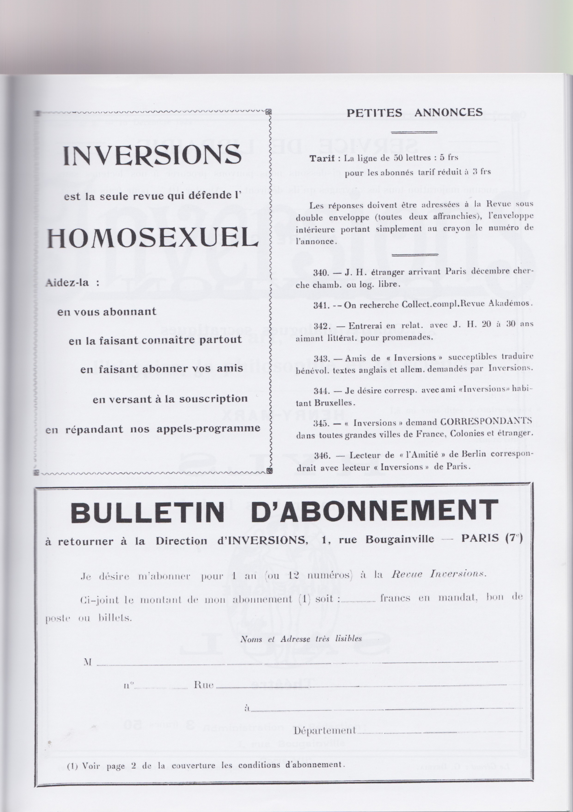
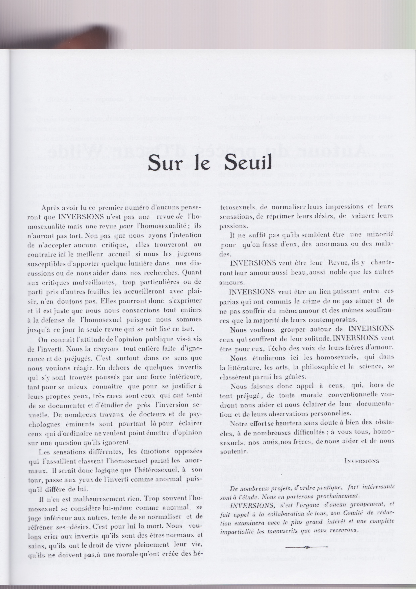

Publiée entre 1924 et 1925, «Inversions» (devenue «l’Amitié» afin d’échapper à un procès pour outrage
aux bonnes moeurs) fut la première revue homosexuelle Française. Anonyme, elle fut dirigée et
Gustave-Léon Beyria, Gaston-Ernest Lestrade et Adolphe Zahnd.
Télécharger le document complet